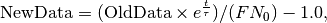
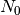
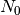
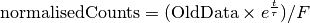
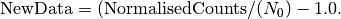

CalculateMuonAsymmetry dialog.
Table of Contents
| Name | Direction | Type | Default | Description |
|---|---|---|---|---|
| NormalizationTable | Input | TableWorkspace | Mandatory | Name of the table containing the normalizations for the asymmetries. |
| UnNormalizedWorkspaceList | Input | str list | Mandatory | An ordered list of workspaces (to get the initial values for the normalizations). |
| ReNormalizedWorkspaceList | Input | str list | Mandatory | An ordered list of workspaces (to get the initial values for the normalizations). |
| OutputFitWorkspace | Input | string | fit | The name of the output fit workspace. |
| StartX | Input | number | 0.1 | The lower limit for calculating the asymmetry (an X value). |
| EndX | Input | number | 15 | The upper limit for calculating the asymmetry (an X value). |
| InputFunction | Input | Function | Mandatory | The fitting function to be converted. |
| Minimizer | Input | string | Levenberg-MarquardtMD | Minimizer to use for fitting. Allowed values: [‘BFGS’, ‘Conjugate gradient (Fletcher-Reeves imp.)’, ‘Conjugate gradient (Polak-Ribiere imp.)’, ‘Damped GaussNewton’, ‘FABADA’, ‘Levenberg-Marquardt’, ‘Levenberg-MarquardtMD’, ‘Simplex’, ‘SteepestDescent’, ‘Trust Region’] |
| MaxIterations | Input | number | 500 | Stop after this number of iterations if a good fit is not found |
| OutputStatus | Output | string | ||
| OutputFunction | Output | Function | The fitting function after fit. |
This algorithm calculates the asymmetry from the first muon spectra in a workspace. in a workspace will be corrected.
The formula for calculating the asymmetry (from counts) is given by:

where  is the muon lifetime (2.1969811e-6 seconds),
is the muon lifetime (2.1969811e-6 seconds),  is the number of good frames and  is a
fitted normalisation constant. The normalisation is calculated by fitting to the normalised counts which is given by
is the number of good frames and  is a
fitted normalisation constant. The normalisation is calculated by fitting to the normalised counts which is given by

and the fitting function is given by
![N_0[1+f(t)]](../_images/math/cea933accac5fd082f5be061788660c813546736.png)
and the renormalized data is transformed via the equation:

Example - Calculating Asymmetry: This example is for calculating the Asymmetry for a single data set.
import math
import numpy as np
def makeData(name,norm):
xData=np.linspace(start=0,stop=10,num=200)
yData=np.sin(5.2*xData)
result = (1-yData )*norm
ws= CreateWorkspace(DataX=xData, DataY=result,OutputWorkspace=name)
return ws
#create a normalisation table
tab = CreateEmptyTableWorkspace()
tab.addColumn('double', 'norm')
tab.addColumn('str', 'name')
tab.addColumn('str', 'method')
tab.addRow([11.,"a","Estimate"])
tab.addRow([22.,"b","Estimate"])
ws= makeData("a",2.30)
ws2= makeData("b",1.10)
myFunc='name=GausOsc,$domains=i,Frequency=5.;'
TFFunc = ConvertFitFunctionForMuonTFAsymmetry(myFunc,tab,["a"],"Construct")
CalculateMuonAsymmetry(tab,["a"],["b"],str(TFFunc),OutputFitWorkspace="fit_result",StartX=0.1,EndX=9.9)
print("Normalization constant for b: {0:.2f}".format(tab.column(0)[1]))
Output:
Normalization constant for b: 2.30
Example - Calculating Asymmetry For multiple data sets: This example is for calculating the Asymmetry for multuiple data sets.
import math
import numpy as np
def makeData(name,norm):
xData=np.linspace(start=0,stop=10,num=200)
yData=np.sin(5.2*xData)
result = (1-yData )*norm
ws= CreateWorkspace(DataX=xData, DataY=result,OutputWorkspace=name)
return ws
#create a normalisation table
tab = CreateEmptyTableWorkspace()
tab.addColumn('double', 'norm')
tab.addColumn('str', 'name')
tab.addColumn('str', 'method')
tab.addRow([11.,"a","Estimate"])
tab.addRow([22.,"b","Estimate"])
tab.addRow([22.,"c","Estimate"])
tab.addRow([22.,"d","Estimate"])
#create original function and workspace
myFunc='name=GausOsc,$domains=i,Frequency=5.;'
myFunc2='name=GausOsc,$domains=i,Frequency=5.;'
multiFunc='composite=MultiDomainFunction,NumDeriv=1;'+myFunc+myFunc2+'ties=(f0.Frequency=f1.Frequency)'
ws= makeData("a",2.30)
ws2= makeData("b",1.10)
ws3= makeData("c",4.1)
ws4= makeData("d",2.0)
TFFunc = ConvertFitFunctionForMuonTFAsymmetry(multiFunc,tab,["a","c"],"Construct")
CalculateMuonAsymmetry(tab,["a","c"],["b","d"],str(TFFunc),OutputFitWorkspace="fit_result",StartX=0.1,EndX=9.9)
print("Normalization constant for b: {0:.2f}".format(tab.column(0)[1]))
print("Normalization constant for d: {0:.2f}".format(tab.column(0)[3]))
Output:
Normalization constant for b: 2.30
Normalization constant for d: 4.10
Categories: Algorithms | Muon
C++ source: CalculateMuonAsymmetry.cpp (last modified: 2018-07-23)
C++ header: CalculateMuonAsymmetry.h (last modified: 2018-06-04)
{kind=link}